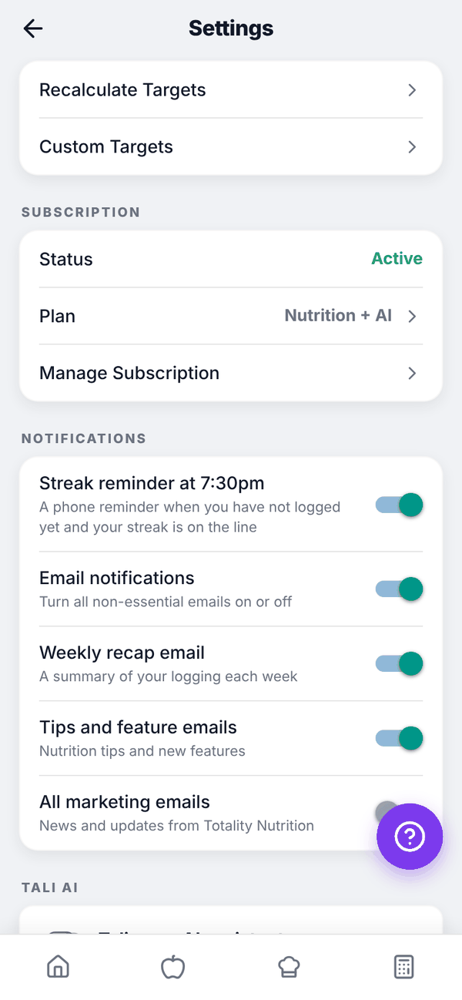
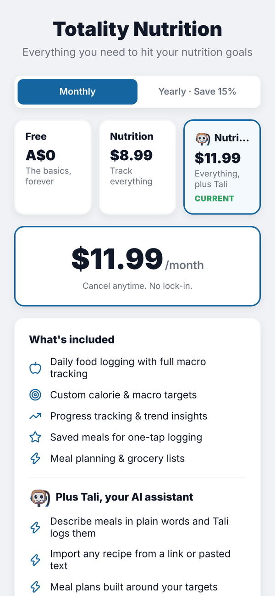
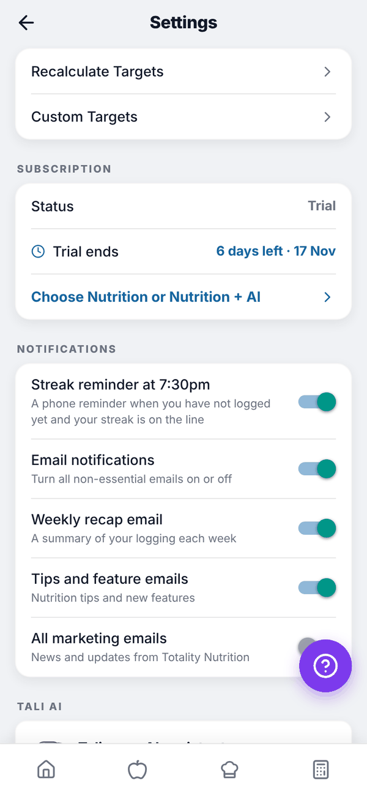
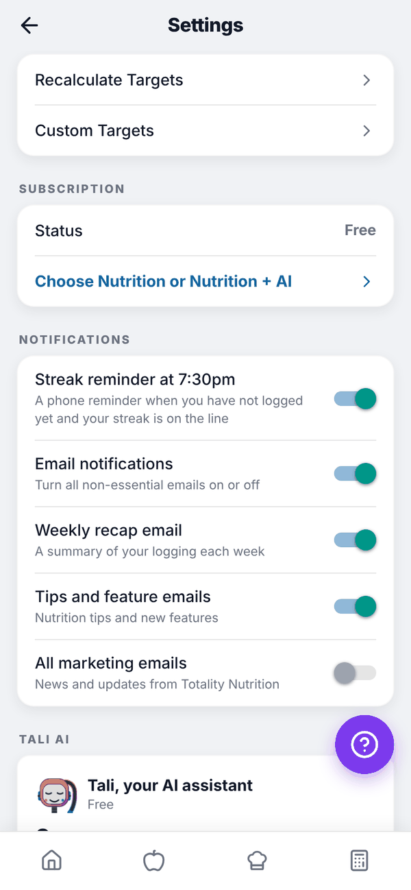

Totality Nutrition guide
Subscribe, change, cancel
Pay on the web, Android or iPhone, change between plans, fix a failed payment, cancel, and what happens when a trial or plan ends.
You can subscribe from any See plans button or from Settings, Subscription. Billing works differently depending on where you pay.
Subscribe on the web or Android (Stripe)#
- Open the plans screen.
- Pick Monthly or Yearly · Save 15%.
- Tap Nutrition or Nutrition + AI.
- Tap Subscribe for $8.99/month (the button shows your plan's price).
- Stripe's secure checkout opens. Enter your card and pay. Any welcome offer, referral or member price is already applied.
- You come back to "Setting up your account…", then "You're subscribed!" and Home.
During your trial you can subscribe early, or tap Continue with free trial to go back.
Subscribe on iPhone (Apple)#
In the iPhone app, subscriptions are sold through Apple. The prices are the ones the App Store shows. If your Apple ID is eligible for Apple's introductory offer, the screen shows it, for example "Welcome offer: A$4.49/month for your first 2 months". Tap Subscribe, confirm with Apple, and you're in. Apple renews it automatically unless you cancel at least 24 hours before the end of the period.
Restore Purchases on the iPhone plans screen finds an existing subscription on your Apple ID, for example after reinstalling. The referral code box and the Totality member price aren't available on iPhone.
Change plan#
- Paid through Stripe: open the plans screen, tap the other plan and tap Switch to Nutrition + AI (or Switch to Nutrition). It changes straight away on your existing subscription, and Stripe adjusts the price for the rest of the period. You'll see "Plan changed".
- Paid through Apple: change it in your iPhone's Settings, Apple ID, Subscriptions.
- A plan paid on the web can't be changed from the iPhone app, and an Apple plan can't be changed on the web. The screen tells you where to go.


Cancel#
- Open Settings and scroll to SUBSCRIPTION.
- Tap Manage Subscription.
- Web and Android: Stripe's billing page opens. Cancel your subscription there, or update your card or see invoices.
- iPhone (Apple billing): the App Store's subscriptions page opens. Cancel there.
When you cancel through Stripe, your plan normally runs to the end of the period you've paid for. When the subscription ends you move to Free.
When a trial or plan ends#
- Trial ends: you move to Free. The plans screen says "Your trial has ended. You're on Free now." Your food history, targets, saved meals and everything else stay.
- Paid plan ends: you move to Free, with "Your subscription has ended" on the plans screen. Paid screens show a padlock again, but your data stays. Meals you saved past the Free limit of 10 still log.
- Payment fails (Stripe): you keep your plan for 14 days while Stripe retries. Settings shows Payment due, and the plans screen says "Your last payment didn't go through." Tap Update my card; there's no need to subscribe again. If the card still fails, the plan ends and you move to Free.


Questions#
I paid but the app still says Free.
Close the app fully and open it again. Paying can take a moment to reach your account. On iPhone, tap Restore Purchases. If it still says Free, email admintotality@gmail.com.
Can I get a refund?
See the refund policy at totality360.com.au/refund.html, or email admintotality@gmail.com. For Apple purchases, refunds go through Apple.
Does deleting my account cancel my subscription?
Cancel first to be safe. Use Manage Subscription in Settings before you delete. An Apple subscription is never cancelled by deleting your account; cancel it in the App Store, or you'll keep being charged.
Where are my invoices?
Web and Android: Manage Subscription opens Stripe's billing page with your invoices. iPhone: your App Store purchase history.